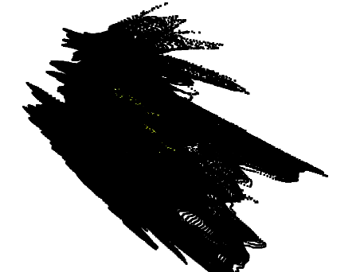
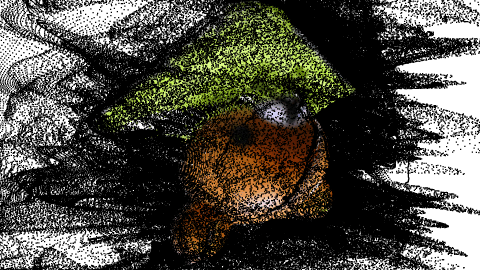
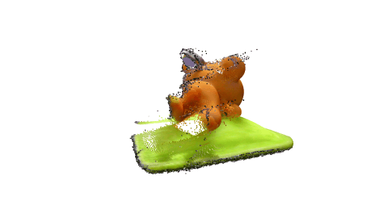
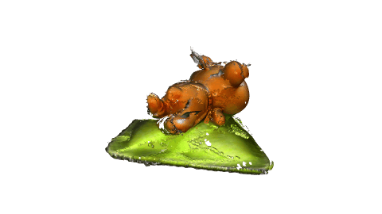

VGGTに複数枚の画像を入力して3Dモデルを作るプログラムです。
・(project) https://vgg-t.github.io/
・(paper) https://arxiv.org/abs/2503.11651
・(code) https://github.com/facebookresearch/vggt
・(demo) https://huggingface.co/spaces/facebook/vggt
(入力画像群)
(得られた点群を使って3D表示)
・何故か背景が飛び出してオブジェクトを覆ってしまう

・拡大すると中に3Dもモデルはできている

・後処理でカラーキーと同じ色の点群を削除してみる
入力画像群を雑にセグメンテーションしたので輪郭にゴミが残っている...

・フィルタを掛けた点群からメッシュを作成する

※ 『VGGTを単一画像深度推定器として使う』と同じです。
● githubからVGGTのコードをダウンロードする
https://github.com/facebookresearch/vggt
Code → Download ZIP
● vggt-main.zip を解凍する
● 学習済モデルパラメータをダウンロードし vggt-main フォルダに配置する
https://huggingface.co/facebook/VGGT-1B/blob/main/model.pt (5.03GB)
download をクリックする
● Python 動作環境を構築する
・pip install opencv-python
・pip install torch torchvision torchaudio
GPUの場合はhttps://pytorch.org/ に従って PyTorch 2.xをインストールする
・pip install gradio
・pip install trimesh
・pip install matplotlib
・pip install scipy
・pip install einops
・pip install open3d
● 画像群を入力して点群のワールド座標を取得。RGB情報と合わせてPLYファイルを作成する
src/vggt_multi_images.py を vggt-main フォルダにコピー
(使い方１)
python vggt_multi_images.py (画像群へのワイルドカード(例：*.png))
(使い方２)
python vggt_multi_images.py (画像ファイル1) (画像ファイル2) ･･･
出力ファイル
・world_points.ply： 点群の座標と色情報。3D表示に使用する
～以下は現状、特に使わないが念のため出力～
・world_points.npy：点群の座標
－dtype: float64
－shape: 画像枚数×AIモデル解像度(高さ)×AIモデル解像度(幅)×3(x,y,z)
・intrinsic.npy ： 推定されたカメラ内部パラメータ。
・extrinsic.npy： 推定されたカメラ外部パラメータ。
・GPUで動作させる場合(未確認)
vggt_single_image.py の以下2行を変更
device = "cpu"
↓
device = "cuda" if torch.cuda.is_available() else "cpu"
dtype = torch.float32
↓
dtype = torch.bfloat16 if torch.cuda.get_device_capability()[0] >= 8 else torch.float16
●点群を表示する
python o3d_display_ply.py (RGB画像) (深度画像) [(zスケール:省略可)]
●カラーキーと同じ色の点群をフィルターする
python filterPLY.py (PLYファイル)
●点群からメッシュを作成する
python o3d_pcd_to_mesh.py (PLYファイル)